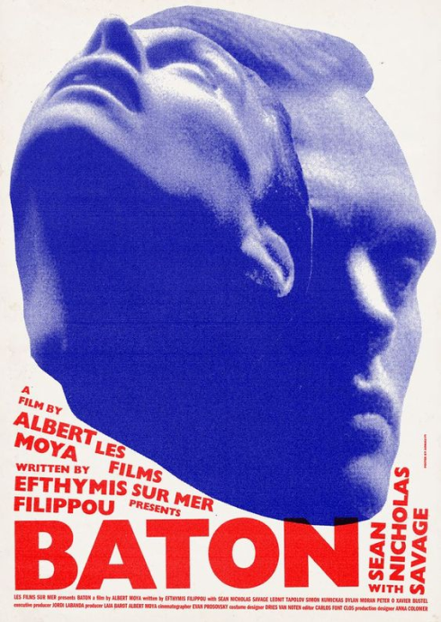
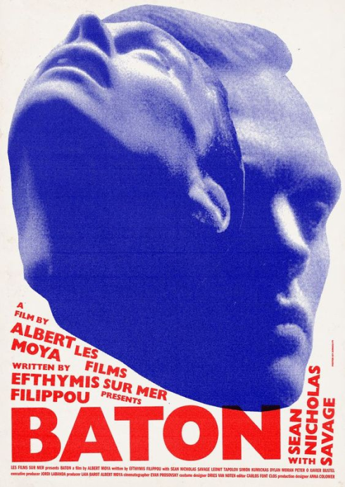
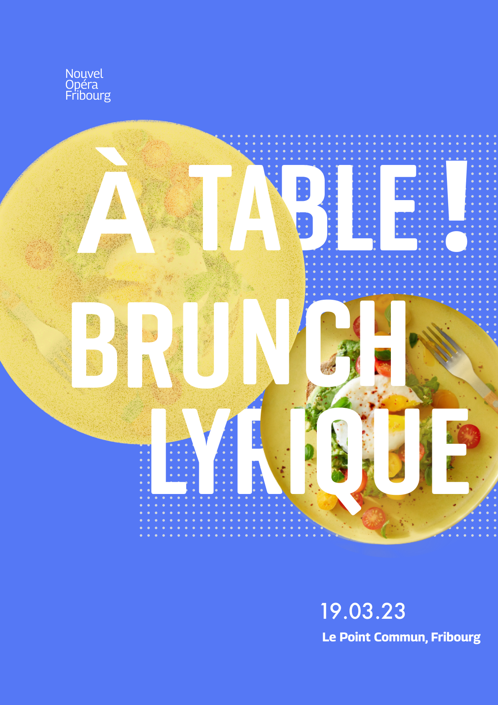
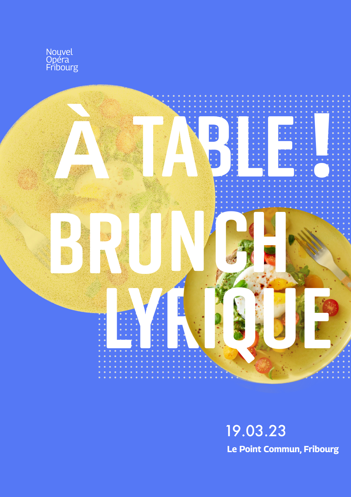
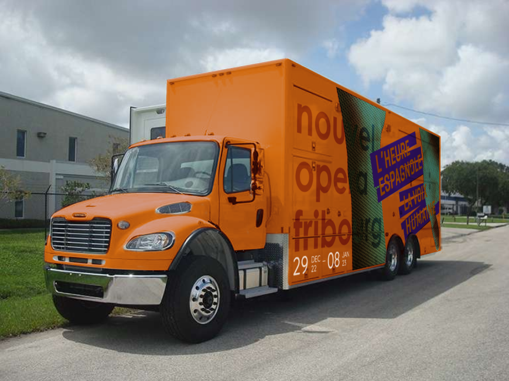
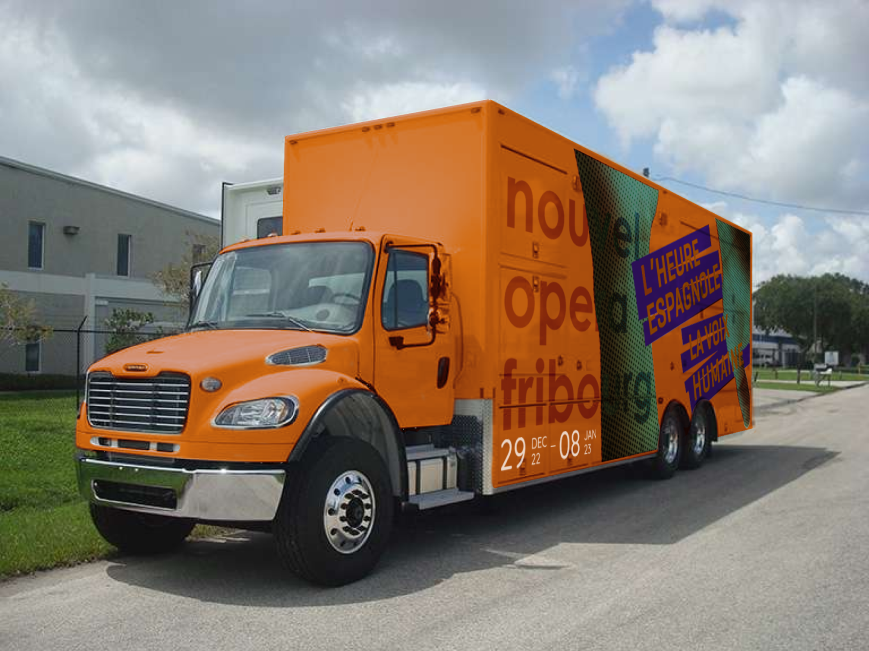

Several visual directions were implemented in the form of poster to create a visual language with the previously explored elements. The potential of each exploration line are put to the test through iterations of the posters and their flexibility to take different arrangements in multiple form factors.


 



 
 
